Fuchu, Hiroshima: things to do, food and stays
Fuchu · Hiroshima
Fuchu
Highlighted on the Hiroshima map.
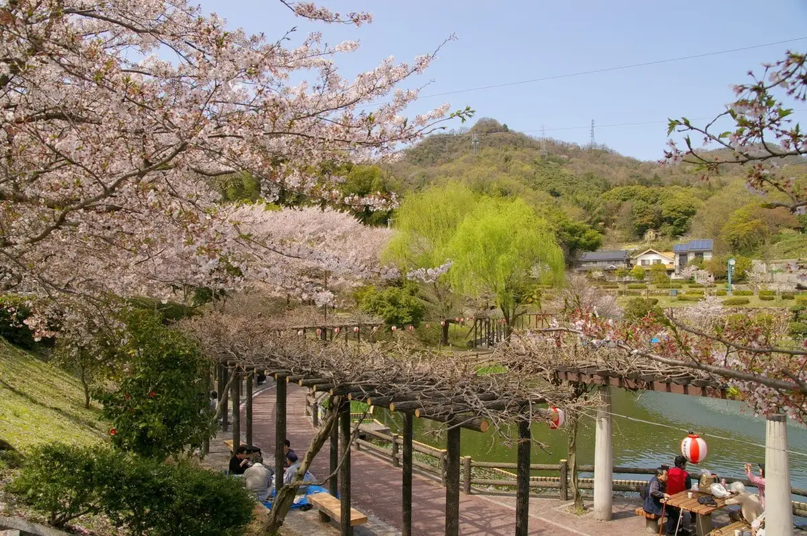
Stay
府中第一ホテル
Fuchu Daichi Hotel
Hotel in Moto, Fuchu with business travelers; 2-minute walk from Fuchu Station.
大吉旅館
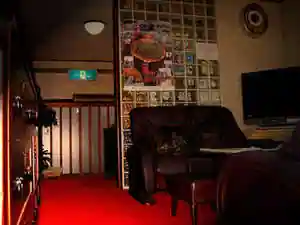
Daikichi Ryokan
Ryokan inn in Fuchu; 5-minute walk from Jrfuchu Station.
Dining
さち
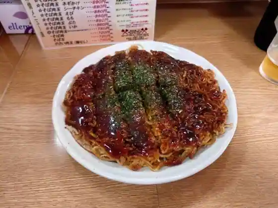
Sachi
平の家
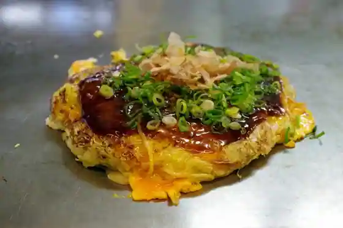
Taira No Ie
古川食堂
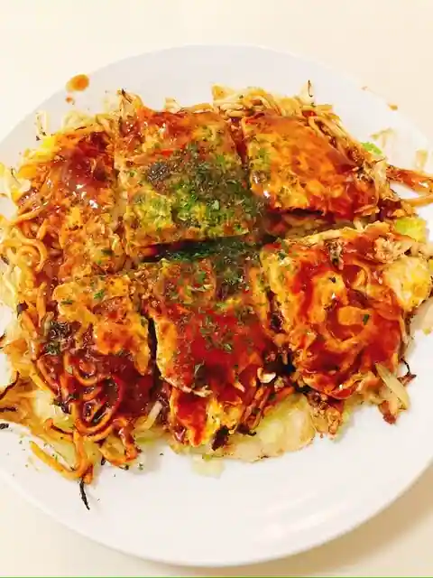
Furukawa Shokudo
くにひろ屋
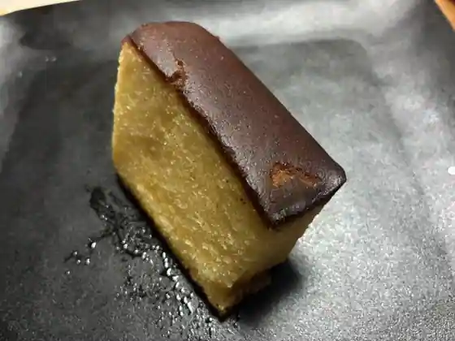
Kunihiro Ya
大吉ラーメン 本店
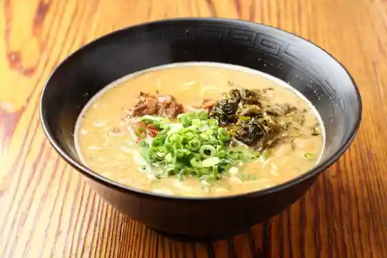
Daikichi Ramen Hon
同楽縁 府中店
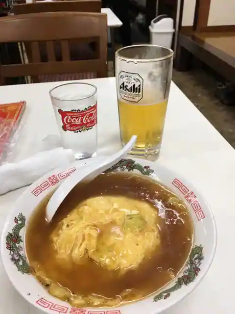
Do Raku Heri Fuchu
お好み焼き鉄板焼きかたおか
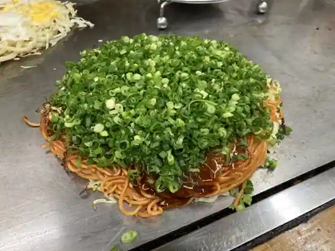
O Konomi Yaki Teppanyaki Kikataoka
福福
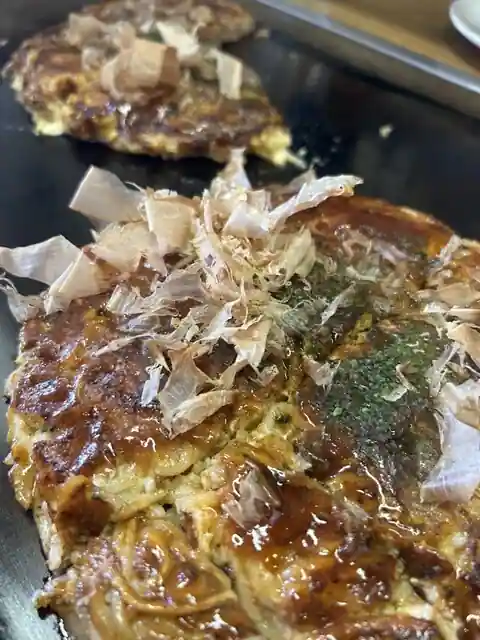
Fukufuku
お好み焼 おがわ
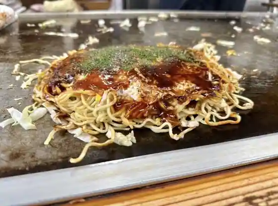
O Konomi Yaki Ogawa
一宮
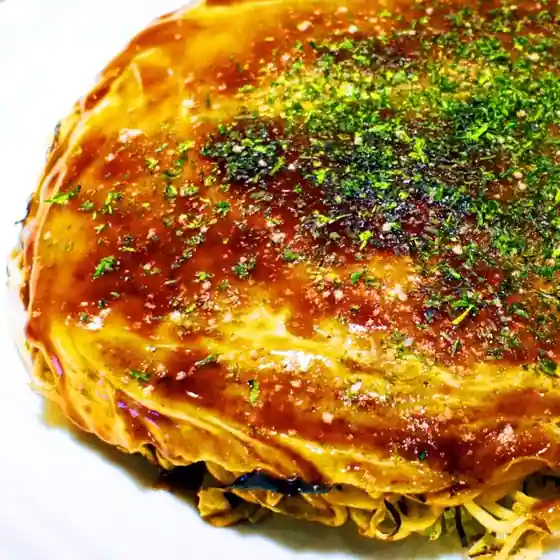
Ichinomiya
東屋
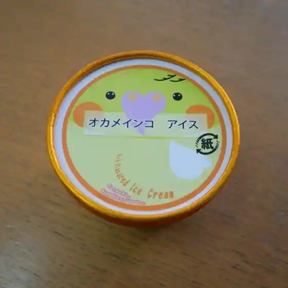
Azumaya
喫茶 マロン
Kissa Maron
道の駅 びんご府中 特産品・軽食コーナー
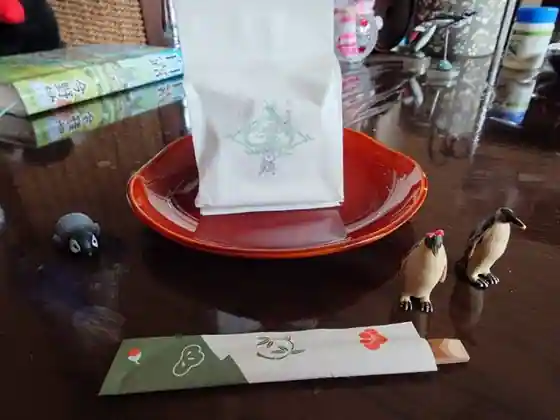
Michi No Eki Bingo Fuchu Tokusanhin Keishoku Kona
ベーカリーレストラン出口と入口
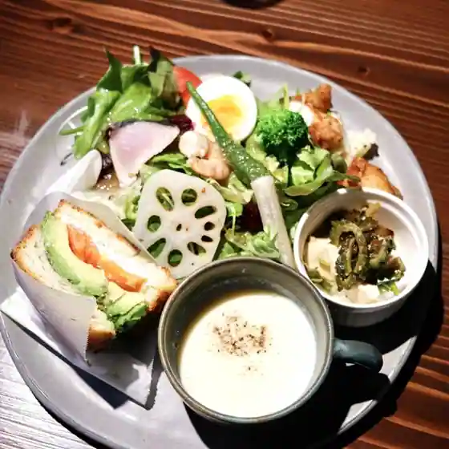
Bakery Restaurant Deguchi To Iriguchi
鉄板焼 やまもと
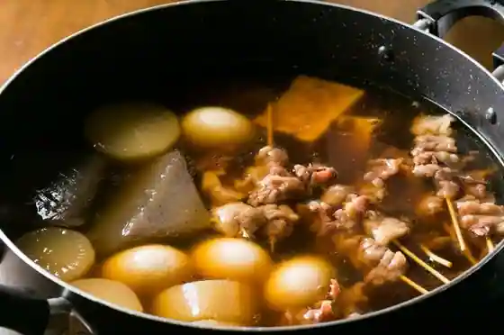
Teppanyaki Yamamoto
矢野駅食堂
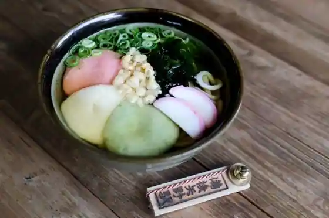
Yano Eki Shokudo
寿旅館
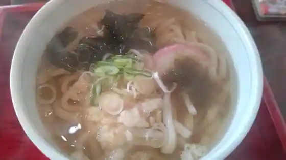
Hisashi Ryokan
道の駅 びんご府中 産直市場
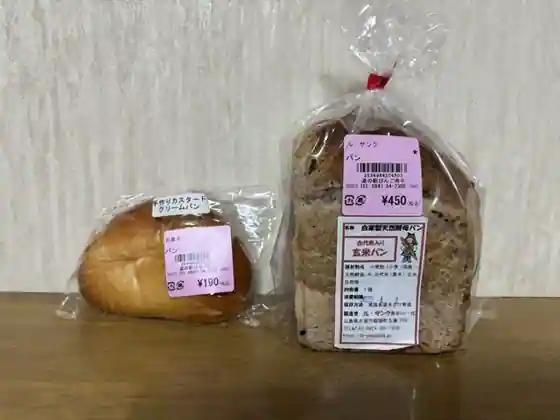
Michi No Eki Bingo Fuchu Sanchoku Shijo
手打ちそば むらかみ
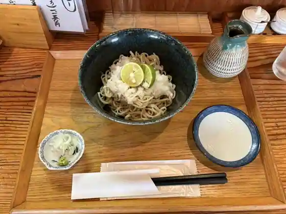
Teuchi Chisoba Murakami
いこり庵
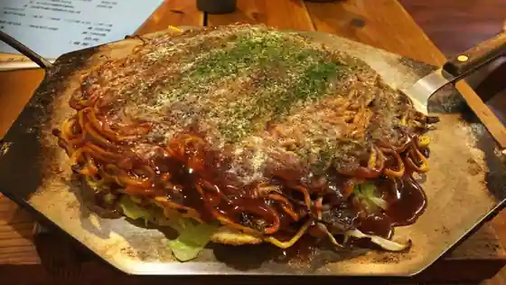
Ikori Iori
あわけん
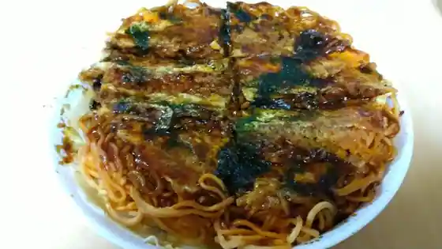
Awaken
殿ちゃんお好み焼
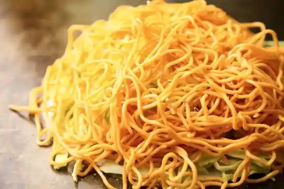
Dono Chan'O Konomi Yaki
手作りケーキ 楓
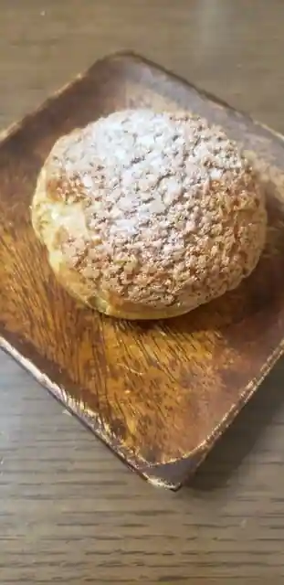
Tezukuri Keki Momiji
俵家
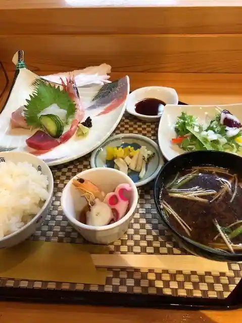
Tawara Ie
Sights
Joge Streetscape
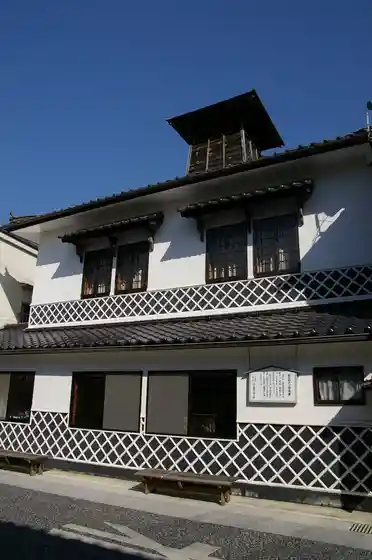
Yano Iwa Umi
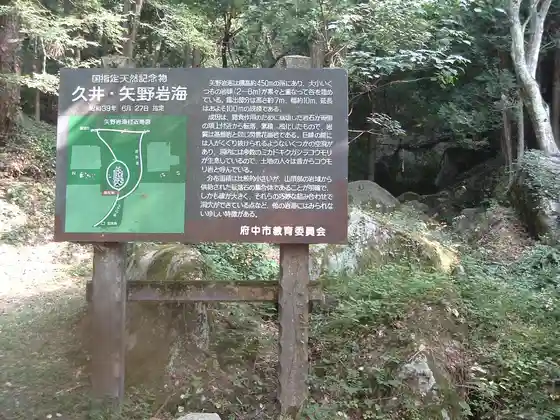
Roadside Station Bingo Fuchu
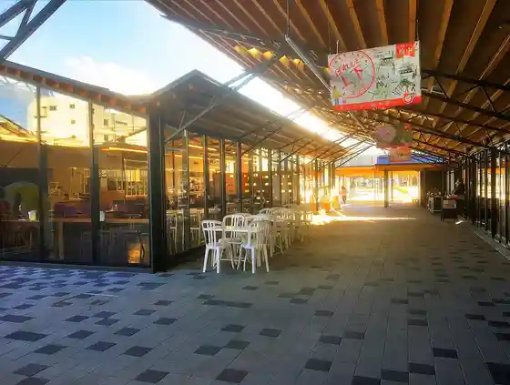
Fuchu Eki
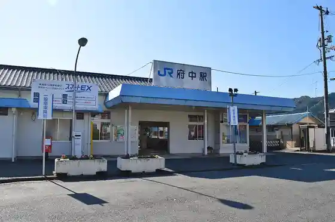
Fuchu Park